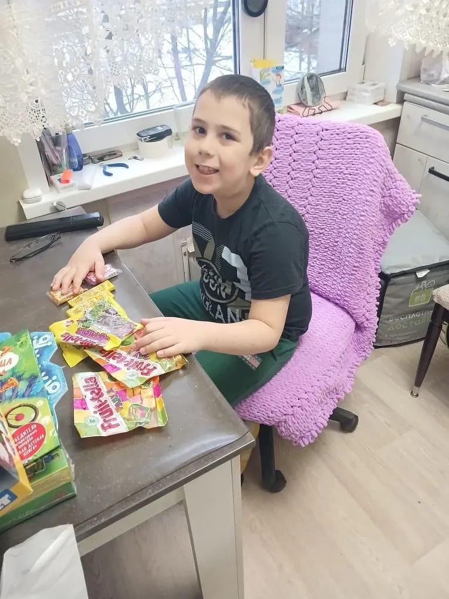
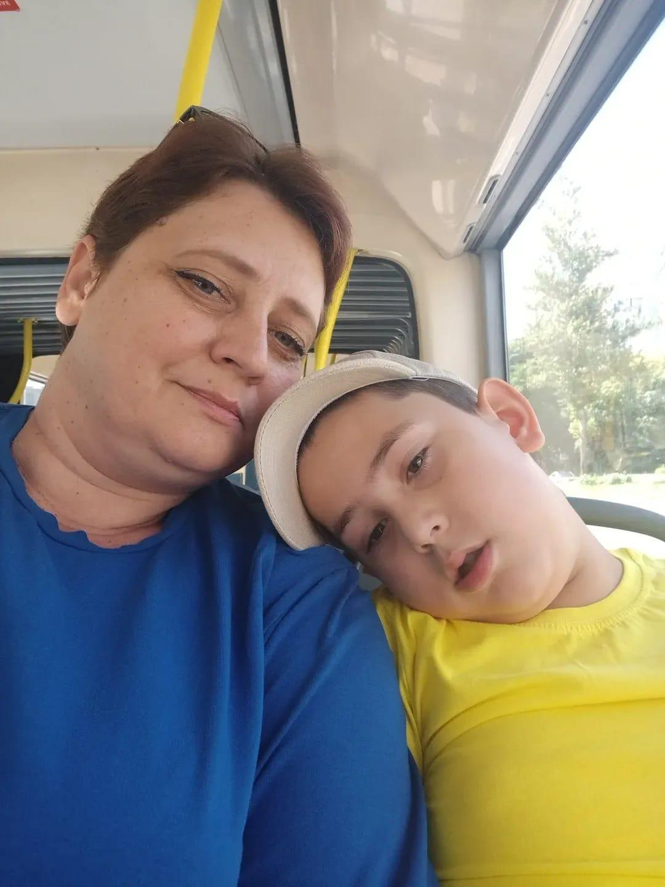
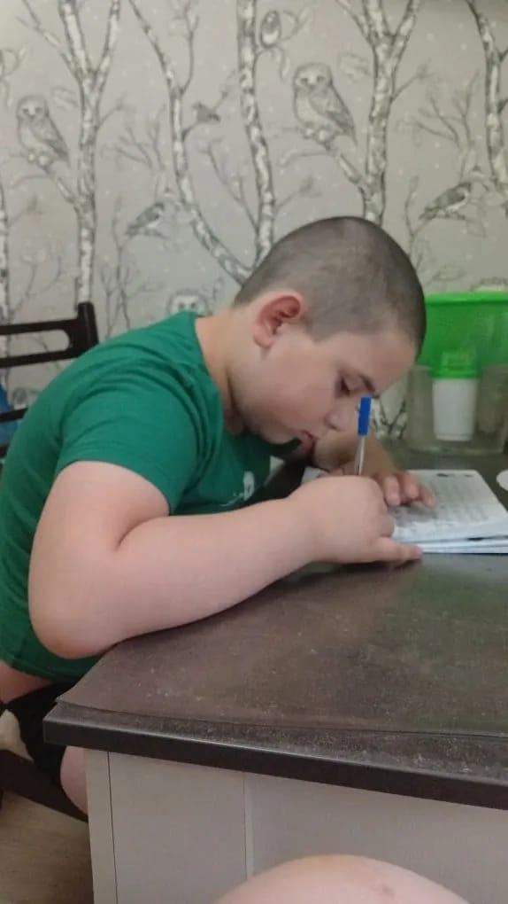

Помогите Ване и его близким

Ваня
- Возраст
- 7 лет
- Проблема
- Аутизм
- Ситуация в семье
- Мать — вдова, родственники живут в другом регионе
Что можно сделать?
Обеспечить помощь профессиональной няни, умеющей работать с «особыми» детьми, и психологическую поддержку для мамы. Тогда у Вани повысятся шансы адаптироваться в школе, а мама сможет заняться своим здоровьем.
Ване 7 лет, и у него аутизм. Когда его переполняют эмоции, он кусает маму и делает больно самому себе.
Его мама Елена надеялась, что когда он пойдёт в специализированную школу и адаптируется там, ситуация наладится. Но уже в первом классе у Вани сменился любимый учитель, и всё стало ещё хуже. После уроков он сидит около охранника и ждёт маму — никто не может уговорить его подняться в класс. Потом кто-то из педагогов не выдерживает и звонит Елене. А когда грустно самой Елене, то ей звонить некому: несколько лет назад она овдовела.
Елена была бы рада сосредоточиться на Ване, но у неё есть ещё проблемы. Во-первых, ей самой нужно срочно пройти медицинское обследование. Во-вторых, она не может работать, и семья живёт только на пособие по инвалидности.
Что вообще можно сделать? Поддержать маму, чтобы она не свалилась с ног, а Ваня не попал в учреждение. Для этого нужна регулярная помощь психолога для мамы и работа няни, которая хотя бы отпустит маму к врачу.


Мнение эксперта

Воспитывать высокочувствительного ребёнка с трудным поведением без помощи расширенной семьи — это не просто «сложно». Это уровень стресса, который можно сравнить с тем, что человек испытывает в зоне боевых действий или на орбите в космосе.
Куратор семьи в АНО «Дирижабль» вместе с Еленой исследует возможности привлекать поддержку родственников, но все её родные живут далеко. Пока она вынуждена справляться одна.
Необходимо снизить уровень стресса хотя бы на время, чтобы не доводить до плачевных последствий здоровье мамы и дать опору ребёнку.
Помогите Ване остаться с мамой
Для оплаты няни для Вани и психолога для мамы Елены на 3 месяца нужны 93 000 ₽. За это время мама восстановит своё здоровье и силы, а мы вместе с педагогами из школы поможем Ване адаптироваться в классе.